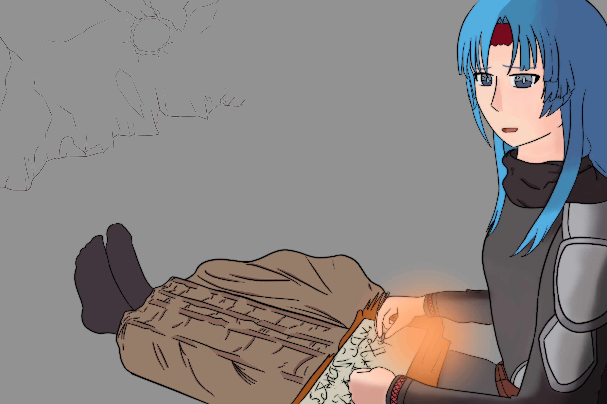
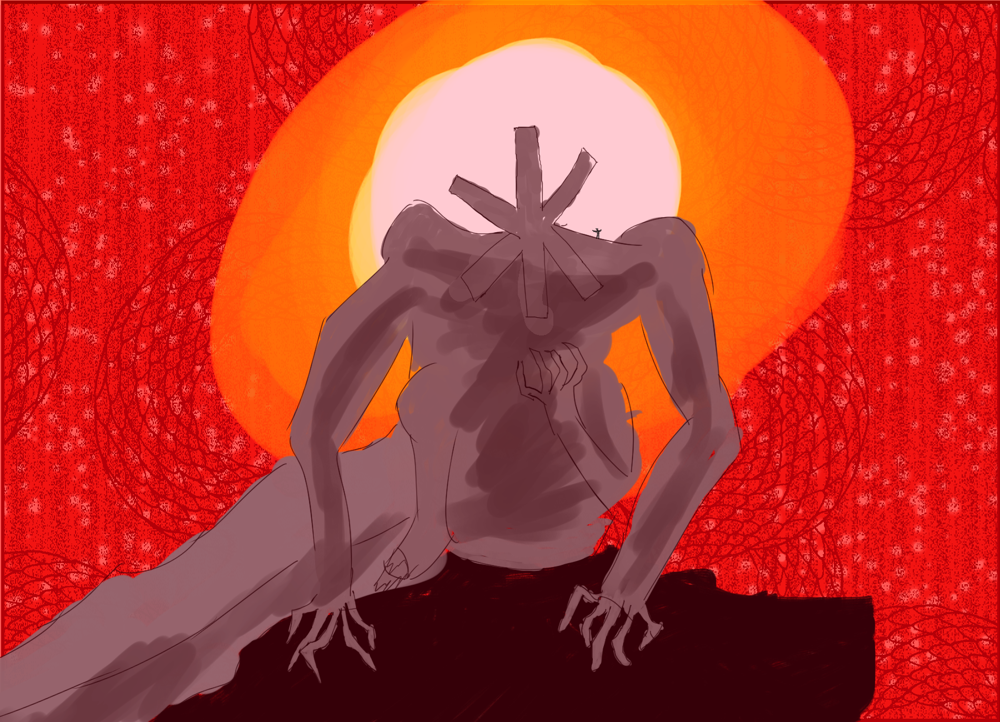
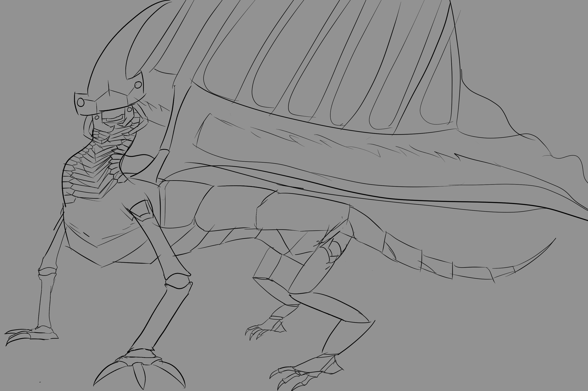
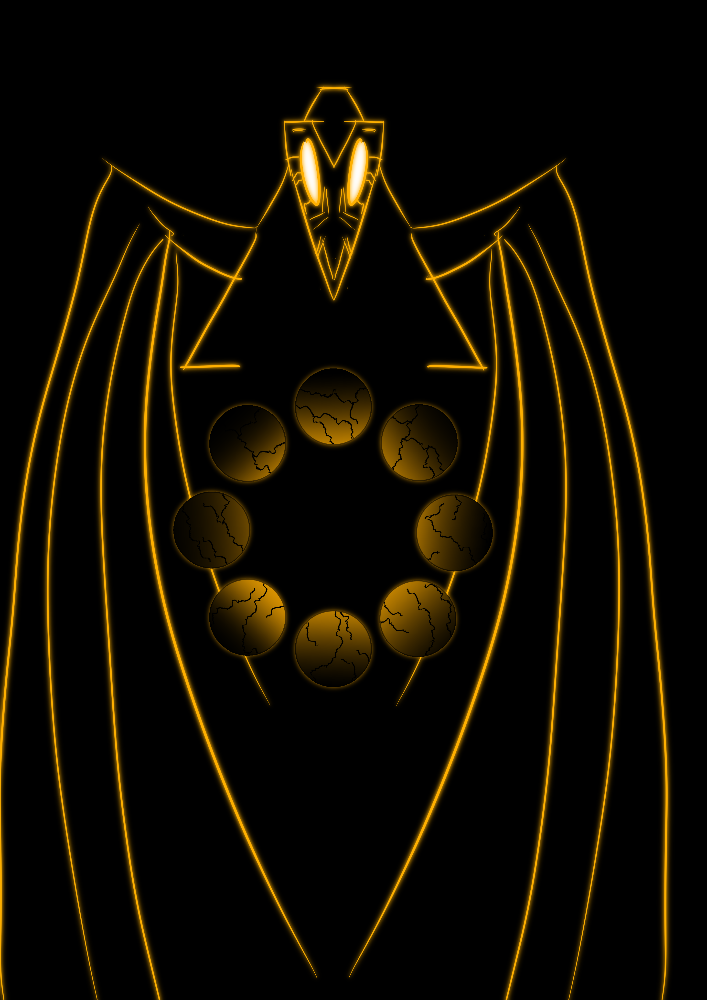
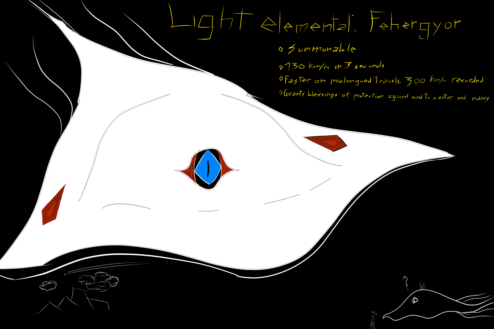
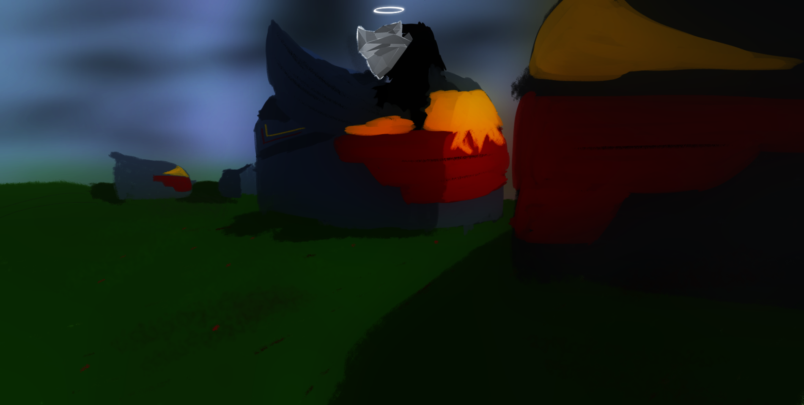
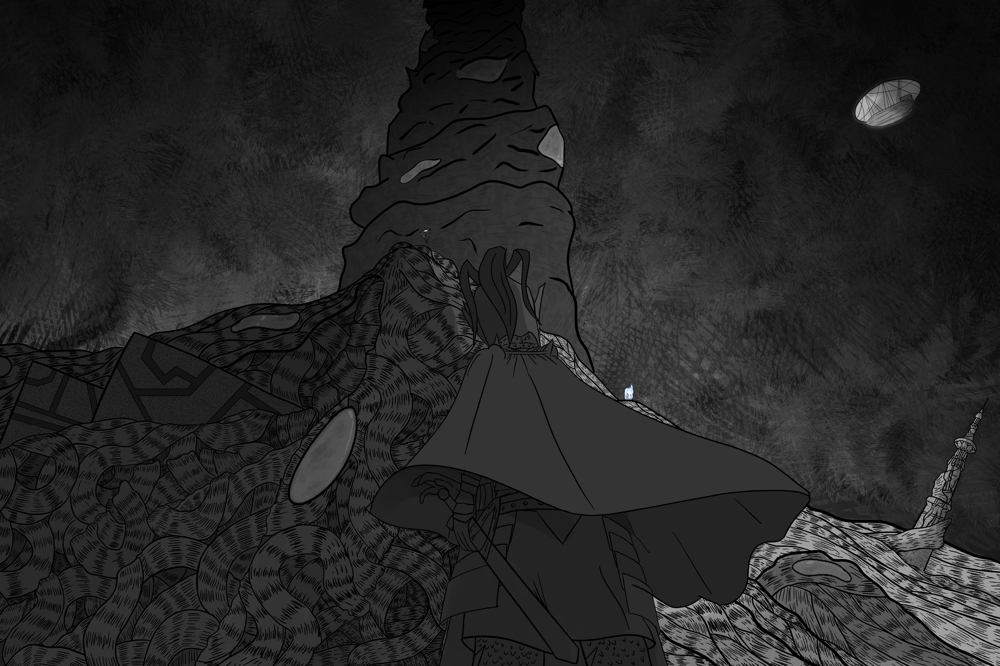
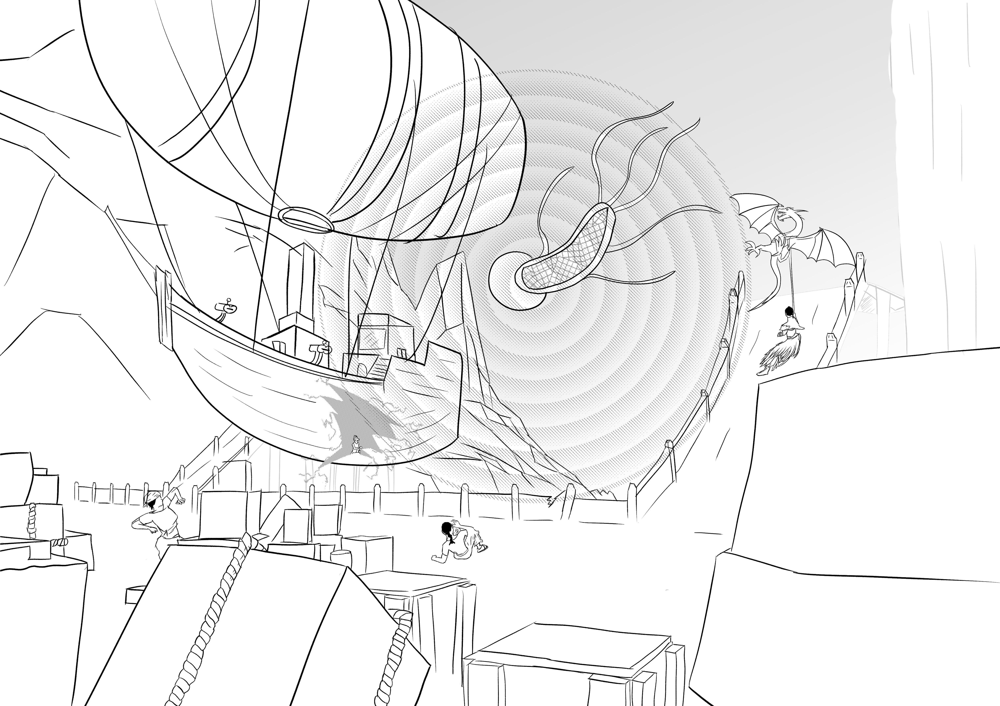

Danmakui
Solodev · Unity · C#
Indice- Video de Danmakui
- Descripcion
- Concept Art mounstros
- Clips de Danmakui
- Arte de Danmakui
Danmakui debia ser un juego prototipo para mostrar de portafolio pero aun no esta terminado.
Juego top-down shooter, controlas a una maga de fuego que esta atrapada en el desierto entre acantilados despues de una emboscada
tienes que buscar los restos de tu carga para que tu compañera, Incapaz de moverse pueda construir algo que las saque del lugar rapido.
La zona esta llena de mounstros traidos aqui como parte de la emboscada, deberas sortearlos, encontrar suficiente carga y volver al refugio.
Desarrollado en Unity, usa Star * parael pathfinding de los enemigos, quienes tienen distintos comportamientos como ir directamente al player
solo encontrarselo cuando este este lo suficiente mente cerca o proteger a otros mounstros, atacando al jugador solo si este ataca primero.
Los primeros mantienen la presion sobre el player mientras que los segundos son una consecuencia de su exploracion y movimientos.
El terreno ahora usa un sistema procedural de dungeons que visualmente son mas como distintos niveles del cañon.
Existen 5 tipos de enemigos y un boss aun no desarrollado.



El Ataque de los Copihues asesinos
Programador
Un proyecto creado para el Abstract Chile Game Jam por un equipo de 3 personas
Desarrollado por:
Programador: Igazi Kenyer | @IgaziKenyer // @igazi.kenyer/
Diseñador: Sebastian Gallardo Álvarez.
Compositor Álvaro Cartes Julio. https://soundcloud.com/varo-c
Preferir jugar en Pantalla completa. El juego aun se encuentra en dudosa calidad despues del gamejam
La.Per.Luz
Dungeon Master/Game Master
La.Per.Luz es una campaña de rol que se ha mantenido activa desde 2014. Muchos de los juegos, historias, ilustraciones y mangas están basados en eventos ocurridos dentro de su mundo, tanto protagonizados por jugadores como por otros personajes.
Actualmente se encuentra en su etapa final, y durante esta fase pretendo crear un fanzine compuesto por ilustraciones basadas en los eventos más importantes vividos por mis jugadores.
La.Per.Luz se desarrolla en Lander Rha, un mundo de fantasía post-apocalíptico.
Toda la vida huraldica existía en Varonyt, la única ciudad: una megalópolis de 400 millones de personas. De un día para otro, la ciudad fue silenciada. Los únicos sobrevivientes fueron turistas que exploraban el continente; cualquiera que regresara caía tras dar apenas veinte pasos, la ciudad aun en pie desde la distancia.
Desamparados, los sobrevivientes descubrieron otros huraldicos, otros seres y otras ciudades: ruinas abandonadas, pero pruebas de vida lejos de Varonyt. Lentamente, redescubrieron tanto la magia como la tecnología de sus ancestros.
Algunos animales y plantas recuerdan a los de Sudamérica, mientras que otros son completamente fantásticos y alienígenas.
Mientras algunos diseñan y redescubren hechizos escritos por antiguos magos, otros entrenan para que su propia magia elemental reescriba el mundo.
Algunos buscan replicar las técnicas marciales que la tierra misma recuerda; otros dedican su vida a las leyes de las distintas ciudades-estado, o a los dioses y espíritus.
Entre el comercio, la subsistencia y los viajes, el orbe elemental de la luz se rompe y comienza a aparecer en fragmentos por todo el continente.
No importa dónde aparezca: revela todos los secretos que allí se esconden, tanto los buenos como los malos.
Un solo fragmento otorga la oportunidad de recordar aquello que podría traer la salvación… o despertar lo que debió permanecer olvidado para siempre.
La.Per.Luz comienza.
Galería









